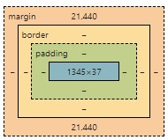

Difference between Margin, Border, and Padding
Back
Padding: the area around the content that is separated by the border
Border: A boundary around the padding and content
Margin: the area outside the border that separates one element from another

Back